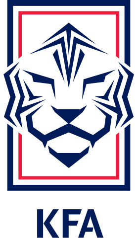

Coreia do Sul
Coreia do Sul11
Participações
(1954-2022)

Ásia
A Coreia do Sul é a seleção asiática com maior número de participações em Copas. Seu ponto alto foi a campanha de 2002, quando chegou ao quarto lugar como uma das sedes do torneio.

Goleiros:
Defensores:
Meias:
Atacantes:
Participações
(1954-2022)
Títulos
-
Melhor campanha
Primeira
participação
| Ano | Sede | Resultado |
|---|---|---|
| 1954 |
|
Fase de grupos |
| 1986 |
|
Fase de grupos |
| 1990 |
|
Fase de grupos |
| 1994 |
|
Fase de grupos |
| 1998 |
|
Fase de grupos |
| 2002 |
|
4º lugar |
| 2006 |
|
Fase de grupos |
| 2010 |
|
Oitavas de final |
| 2014 |
|
Fase de grupos |
| 2018 |
|
Fase de grupos |
| 2022 |
|
Oitavas de final |
| Jogos disputados | 38 |
| Vitórias | 7 |
| Empates | 10 |
| Derrotas | 21 |
| Gols marcados | 39 |
| Gols sofridos | 78 |

calendar_monthJunho - Julho de 2026
location_onMéxico, Estados Unidos e Canadá